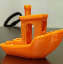
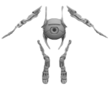

3D моделі в архітектатурі
Побудова виконується в середовищі AutoCAD

Сфери використання технологій 3D-моделювання
Сьогодні 3D-моделювання для багатьох людей стало невід’ємною частиною життя. Із
вузькоспеціалізованої та дорогої послуги
він переростає у незамінного помічника для різних сфер діяльності.
Швидкі розробки квартир і будинків.
Детальний план будинків.
Допомога з дизайном в архітектурі.
Як ми працюємо
01
Складання заявки на прорахунок вартості та строків
02
Передплата роботи
03
Створення та узгодження 3D-моделі
04
3D-друк
05
Завершення виконання роботи
Матеріали

PETG
Різновид добре відомого та широко застосовуваного пластику PET
(поліетилентерефталату), який використовується для
виготовлення харчових контейнерів, пляшок для води, волокон для одягу.
NYLON
Nylon має покращену хімічну та термічну стійкість, чудову якість поверхні
та простоту друку.
ABS (FDM)
Пластик ударостійка технічна термопластична смола на основі полімеру
крилонітрилу з бутадієном та стиролом.
FLEX
Гнучкий пластик для 3D-друку. Має різну твердість від твердої гуми до дуже
м'якого порівнянного з силіконом.
PLA
Біорозкладний термопластичний поліефір на основі молочної кислоти –
продукту перероблення кукурудзи, цукрової тростини,
крохмалю та целюлози.
3-D моделювання дає нам змогу проектувати набагато складніші об’єкти чи моделі.
Промислові прототипи
Для випробування зразків перед початком виробництва
Архітектурні макети
Для наочної презентації ваших проектів
Ювелірні вироби
Для надання індивідуального стилю
Скульптури
Для творчої декорації інтер'єру
Інженерні деталі
Для втілення у життя сміливих ідей
Презентаційні макети
Для демонстрації на виставках чи на вітринах
Медичні та освітні моделі
Для використання в якості навчальних посібників
Автозапчастини
Для заміни рідкісних чи знятих із виробництва деталей
Сувенірна продукція
Для створення незвичайних і незабутніх подарунків
Галерея кращих робіт

Принтери
Історія 3D-друку почалася аж у 1981 році в Японії
SLA-Надточний друк
Методом отвердіння рідкого філаменту (фотополімерної смоли або іншої фотополімерної рідини). Найчастіше застосовується в ювелірній та стоматологічній справі для створення предметів складної геометрії.
- Висока точність.
- Менша область друку.
- Краща якість дрібних деталей.
FDM-Друк
Метод адитивного виробництва:розплавлений пластик (або інший філамент) наноситься шаром за шаром для побудови об'єкта. Для створення виробів із широкого спектра матеріалів з різними характеристиками та властивостями.
- Швидкість.
- Дешева ціна пластику.
- Дешевший.